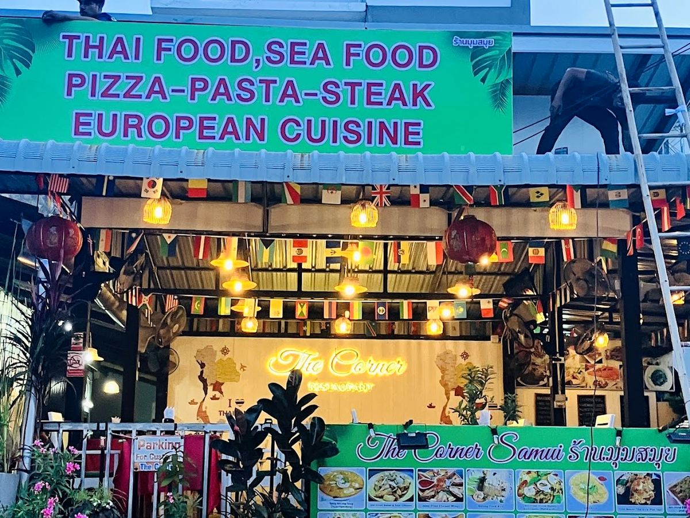
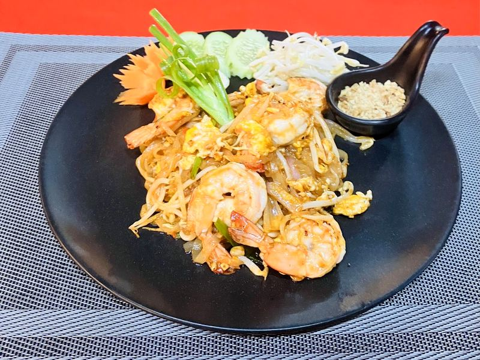
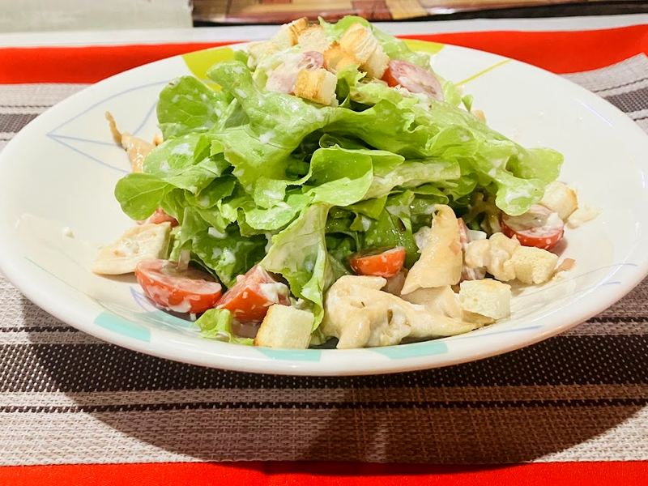
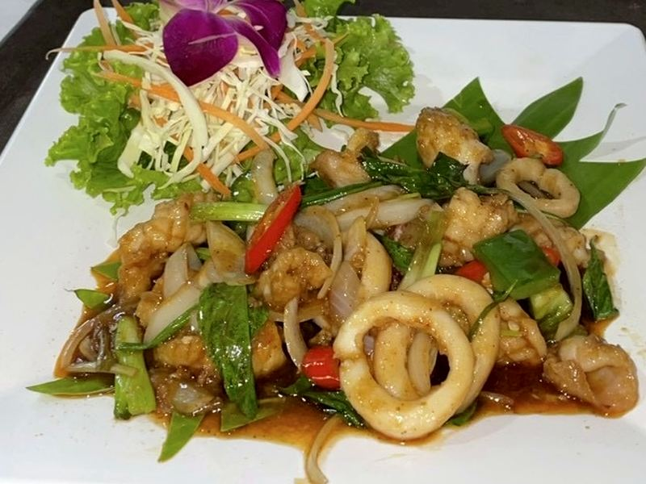
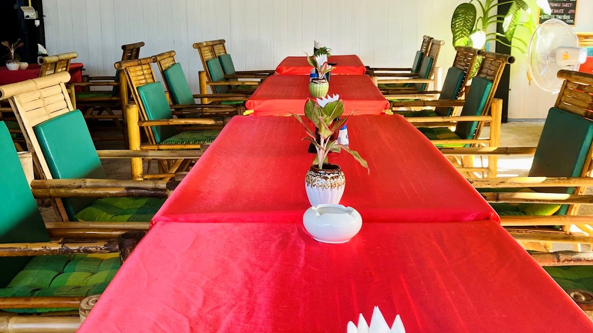

Thai, seafood and pizza on one corner
A family kitchen on Soi Sawasdee, Chaweng Noi. Open every day from 10:00 to 22:00.


A family kitchen on Soi Sawasdee, Chaweng Noi. Open every day from 10:00 to 22:00.
Deep fried ice cream and mango sticky rice.
Or a fresh coconut, served with an orchid.



On Soi Sawasdee, between Chaweng Noi and Chaweng. Look for the green sign. Cocktails and a happy hour at the bar.